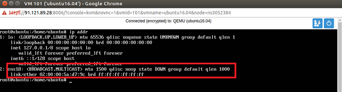

Para la configuración de una IP estática en Ubuntu server se debe realizar los siguientes pasos:
1. Si la máquina virtual se encuentra encendida entonces se debe apagar.
2. Seleccionamos la configuración de hardware de la máquina virtual para poder cambiarle su Mac Virtual.
3. Aparecerá una ventana en la cual debemos cambiar la Mac que el servidor asignó automáticamente por la Mac virtual de la IP a asignar.
a. Cuando se crea una máquina virtual el servidor le asigna automáticamente su Mac física.
b. Para que la máquina virtual pueda tener internet a través de la IP pública se debe cambiar la Mac predeterminada por una Mac virtual de la IP.
c. Para crear la Mac virtual se debe realizar en el panel de administración donde se contrató el lote de IP’s.
4. Después de configurar la Mac virtual realizamos lo siguiente:
a. Confirmamos si estamos actuando como superusuarios.
b. Editamos el archivo de configuración de interfaces de Ubuntu para la configuración de la IP el cual se encuentra en la siguiente ruta “nano /etc/network/interfaces”.
5. Para la configuración de la IP necesitamos conocer el nombre de la tarjeta de red a configurar. Para conocer el nombre utilizamos el comando “ip add”.

6. Para este ejemplo la tarjeta de red es ens18. Entramos a configurar el archivo de interfaz “nano /etc/network/interfaces”.
Realizamos las siguientes configuraciones:
a. Activamos la tarjeta de red “auto ens18”.
b. Indicamos que la IP a configurar es estática “iface ens18 inet static”.
c. Indicamos la IP “address 149.202.3.61”.
d. Mascara de red “netmask 255.255.255.255”.
e. Broadcast “broadcast 149.202.3.61”.
f. Configuramos la Gateway con las siguientes líneas:
7. Guardamos el archivo y reiniciamos la red con el comando “service networking restart”.
8. Corroboramos que nuestro sistema tenga la IP agregada correctamente por medio del comando “ip add”.
9. Probamos si nuestro sistema tiene internet haciendo ping a google.com “ping google.com”.
10. Probamos la conexión SSH a la IP configurada del servidor. “ssh root@149.202.3.61”.
11. Conexión remota SSH exitosa..